Publication
Mueller, S., Im, S., Gurevich, S., Teibrich, A., Pfisterer, L., Guimbretière, F., and Baudisch, P.
WirePrint: Fast 3D Printed Previews.
In Proceedings of
UIST ’14
, pp. 273-280.
Demo at UIST'14
DOI
Paper
Video
Slides
Talk
Press
Video
Talk
Slides


1 / 76

2 / 76

3 / 76

4 / 76

5 / 76

6 / 76

7 / 76

8 / 76

9 / 76

10 / 76

11 / 76

12 / 76

13 / 76

14 / 76

15 / 76

16 / 76

17 / 76

18 / 76

19 / 76

20 / 76

21 / 76

22 / 76

23 / 76

24 / 76

25 / 76

26 / 76

27 / 76

28 / 76

29 / 76

30 / 76

31 / 76

32 / 76

33 / 76

34 / 76

35 / 76

36 / 76

37 / 76

38 / 76

39 / 76

40 / 76

41 / 76

42 / 76

43 / 76

44 / 76

45 / 76

46 / 76

47 / 76

48 / 76

49 / 76

50 / 76

51 / 76

52 / 76

53 / 76

54 / 76

55 / 76

56 / 76

57 / 76

58 / 76

59 / 76

60 / 76

61 / 76

62 / 76

63 / 76

64 / 76

65 / 76

66 / 76

67 / 76

68 / 76

69 / 76

70 / 76

71 / 76

72 / 76

73 / 76

74 / 76

75 / 76

76 / 76

WirePrint:
Fast 3D Printed Previews.
 Figure 1: WirePrint prints 3D objects as wireframe previews. By extruding filament directly into 3D space instead of printing layer-wise, it achieves a speed-up of up to a factor of 10, allowing designers to iterate more quickly in the early stages of design. WirePrint achieves its maximum speed-up on (a) 3D printers based on the delta design, but also works on traditional Cartesian-based printers such as the PrintrBot shown in (c).
Even though considered a rapid prototyping tool, 3D printing is so slow that a reasonably sized object requires printing overnight. This slows designers down to a single iteration per day. With WirePrint, we propose to instead print low-fidelity wireframe previews in the early stages of the design process. Wireframe previews are 3D prints in which surfaces have been replaced with a wireframe mesh. Since wireframe previews are to scale and represent the overall shape of the 3D object, they allow users to quickly verify key aspects of their 3D design, such as the ergonomic fit.
To maximize the speed-up, we instruct 3D printers to extrude filament not layer-by-layer, but directly in 3D-space, allowing them to create the edges of the wireframe model directly one stroke at a time. This allows us to achieve speed-ups of up to a factor of 10 compared to traditional layer-based printing. We demonstrate how to achieve wireframe previews on standard FDM 3D printers, such as the PrintrBot or the Kossel mini. Users only need to install the WirePrint software, making our approach applicable to many 3D printers already in use today. Finally, wireframe previews use only a fraction of material required for a regular print, making it even more affordable to iterate.
Introduction
The recent development in rapid prototyping tools, such as 3D printers [5] allows users to prototype one-off objects and to iterate over designs. Unfortunately, 3D printers are inherently slow, because they fabricate objects voxel-by- voxel and layer-by-layer. A reasonably sized object thus tends to print overnight, slowing designers down to a single iteration per day [15].
We therefore argue that the process of how 3D printers are used for quick design iteration is not yet optimal. In other disciplines, such as in user interface design, designers achieve a fast and efficient process by iterating from low-fidelity prototyping techniques to high-fidelity techniques.
In order to allow designers to iterate quickly, low-fidelity techniques, such as sketching and paper prototyping, give priority to speed over functionality. This trade-off pays off in the early phases of design because it encourages the quick exploration of several versions before committing further resources, eventually leading to a better design [2].
We argue that the same principle should apply to 3D printing – a concept we call low-fi fabrication. In contrast to the traditional workflow, in which the 3D model is always fabricated as slow hi-fidelity print, low-fi fabrication fabricates all intermediate versions as fast low-fidelity previews. Only at the end, when the design is finished, the complete 3D model is printed as hi-fidelity (Figure 2).
One low-fi fabrication approach is faBrickation [15]—a system that achieves speed-up by substituting less crucial parts of a 3D model with Lego bricks. Unfortunately, faBrickation requires users to manually assemble the bricks, so is effectively trading in printing time for manual effort.
In this paper, we present a low-fi fabrication approach that is not only fast, but also fully automated. The key idea is to print the 3D object as a wireframe preview, i.e. a 3D print in which surfaces have been replaced with a wireframe mesh. Our approach runs on standard FDM 3D printers, such as the PrintrBot or the Kossel mini (rather than on a 5 axis robot arm [12])—users only need to install the WirePrint software. Additional cooling around the print head helps to maximize the printing speed.
Figure 1: WirePrint prints 3D objects as wireframe previews. By extruding filament directly into 3D space instead of printing layer-wise, it achieves a speed-up of up to a factor of 10, allowing designers to iterate more quickly in the early stages of design. WirePrint achieves its maximum speed-up on (a) 3D printers based on the delta design, but also works on traditional Cartesian-based printers such as the PrintrBot shown in (c).
Even though considered a rapid prototyping tool, 3D printing is so slow that a reasonably sized object requires printing overnight. This slows designers down to a single iteration per day. With WirePrint, we propose to instead print low-fidelity wireframe previews in the early stages of the design process. Wireframe previews are 3D prints in which surfaces have been replaced with a wireframe mesh. Since wireframe previews are to scale and represent the overall shape of the 3D object, they allow users to quickly verify key aspects of their 3D design, such as the ergonomic fit.
To maximize the speed-up, we instruct 3D printers to extrude filament not layer-by-layer, but directly in 3D-space, allowing them to create the edges of the wireframe model directly one stroke at a time. This allows us to achieve speed-ups of up to a factor of 10 compared to traditional layer-based printing. We demonstrate how to achieve wireframe previews on standard FDM 3D printers, such as the PrintrBot or the Kossel mini. Users only need to install the WirePrint software, making our approach applicable to many 3D printers already in use today. Finally, wireframe previews use only a fraction of material required for a regular print, making it even more affordable to iterate.
Introduction
The recent development in rapid prototyping tools, such as 3D printers [5] allows users to prototype one-off objects and to iterate over designs. Unfortunately, 3D printers are inherently slow, because they fabricate objects voxel-by- voxel and layer-by-layer. A reasonably sized object thus tends to print overnight, slowing designers down to a single iteration per day [15].
We therefore argue that the process of how 3D printers are used for quick design iteration is not yet optimal. In other disciplines, such as in user interface design, designers achieve a fast and efficient process by iterating from low-fidelity prototyping techniques to high-fidelity techniques.
In order to allow designers to iterate quickly, low-fidelity techniques, such as sketching and paper prototyping, give priority to speed over functionality. This trade-off pays off in the early phases of design because it encourages the quick exploration of several versions before committing further resources, eventually leading to a better design [2].
We argue that the same principle should apply to 3D printing – a concept we call low-fi fabrication. In contrast to the traditional workflow, in which the 3D model is always fabricated as slow hi-fidelity print, low-fi fabrication fabricates all intermediate versions as fast low-fidelity previews. Only at the end, when the design is finished, the complete 3D model is printed as hi-fidelity (Figure 2).
One low-fi fabrication approach is faBrickation [15]—a system that achieves speed-up by substituting less crucial parts of a 3D model with Lego bricks. Unfortunately, faBrickation requires users to manually assemble the bricks, so is effectively trading in printing time for manual effort.
In this paper, we present a low-fi fabrication approach that is not only fast, but also fully automated. The key idea is to print the 3D object as a wireframe preview, i.e. a 3D print in which surfaces have been replaced with a wireframe mesh. Our approach runs on standard FDM 3D printers, such as the PrintrBot or the Kossel mini (rather than on a 5 axis robot arm [12])—users only need to install the WirePrint software. Additional cooling around the print head helps to maximize the printing speed.
 Figure 2: Low-fi fabrication: all intermediate versions are fabricated as fast low-fidelity prints. Only the final version is fabricated as hi-fidelity.
WirePrint
Figure 1a shows the 3D wireframe of a bottle in the process of being printed using WirePrint. WirePrint takes 14 minutes to 3D print the bottle (on our Kossel mini 3D printer [3]). This is 8.5 times faster than a traditional full-detail 3D print on the same 3D printer.
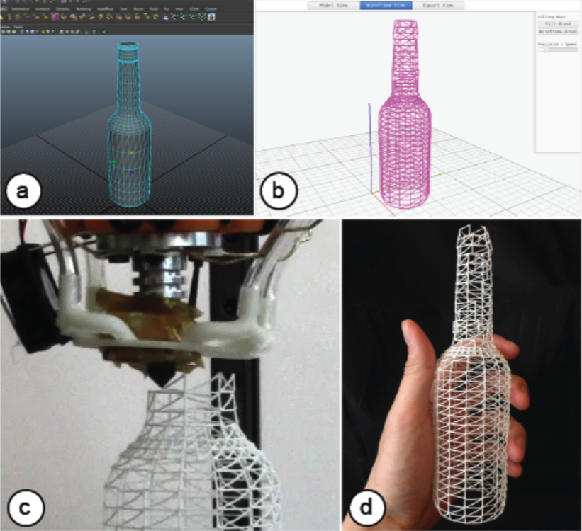
Figure 3: Iterating a design using WirePrint: (a) adjusting the model in a 3D editor, (b) converting it in the WirePrint software, (c) reprinting, (d) testing.
3D wireframes created with WirePrint allow designers to quickly validate the high-level design of a 3D object, such as its ergonomic fit. After examining the bottle shown in Figure 1b, the designer notices that the bottle does not yet rest comfortably in the hand—the designer thus decides to change the model. Figure 3 illustrates the typical workflow when iterating over a design using WirePrint. (a) The designer adjusts the thickness of the bottle in a 3D modeling program, (b) converts the model in the WirePrint software, (c) reprints it, and (d) tests its fit in the hand again. The designer may repeat the process until the bottle fits well. At this point, the designer moves on to the details of the design, until finally 3D printing the bottle (1:59 hours). WirePrint allows this design process, including its iterations, to be completed within only a couple of hours.
How WirePrint works
WirePrint converts a 3D object into a wireframe representation by (1) slicing the 3D model along its vertical axis into horizontal slices and (2) extracting the contours. It then (3) fills the space between slices with a zigzag pattern.
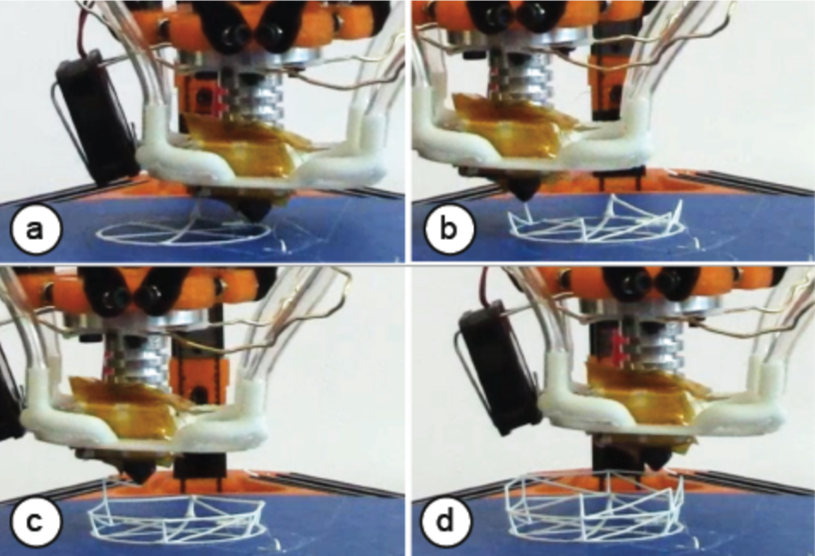
Figure 4: WirePrint’s layouts consist of an alternation between (a) contour and (b) zigzag.
As illustrated by Figure 4, WirePrint fabricates objects by alternating between (a) printing a contour and (b) creating one layer of the zigzag pattern on top of the contour. Unlike traditional 3D printers that stack filament on filament, WirePrint creates its layers by moving the print head up and down repeatedly.
If a slice contains multiple disconnected contours, such as the telephone receiver shown in Figure 5, WirePrint prints all contours located on the same slice first (i.e. the contour of the left ear cap, then the contour of the right ear cap), before moving up to the next slice.
Figure 6 illustrates why WirePrint uses this particular contour-plus-zigzag approach. The main challenge in printing wireframes is that the print head has to respect already printed material in order to prevent collisions. Each bit of printed material results in additional volume becoming inaccessible
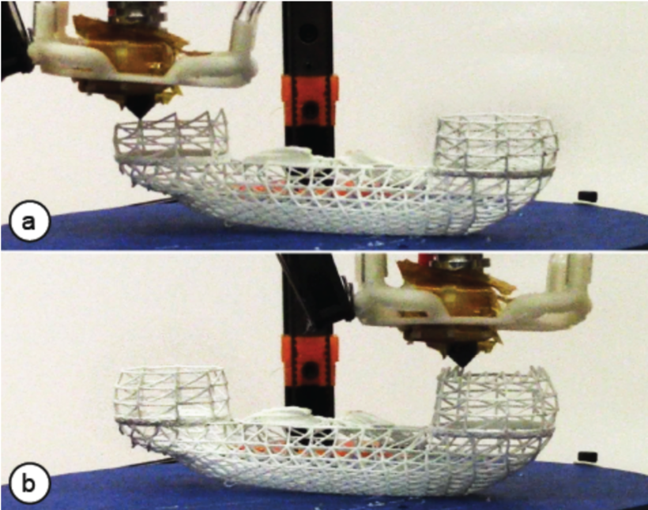
Figure 5: Multiple contours are printed one at a time.
Figure 6 describes the consequences that result from volume becoming inaccessible: (a)Two vertical edges, for example, need to be spaced at least one print head diameter apart. (b) While it is always possible to print upwards, we cannot print downwards steeper than the slant of the print head itself, as steeper edges can cause the slanted tip of the print head to collide with what is just being printed. In the case of our 3D printer (a Kossel Mini [3]), for example, this threshold angle is 32 degrees.
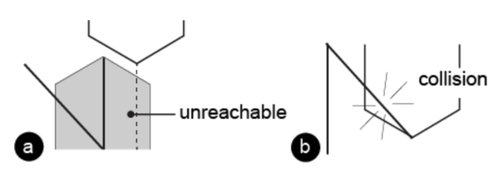
Figure 6: To prevent collisions, (a) the print head can neither print next to already printed material, (b) nor descend more steeply than the threshold angle.
These constraints still allow for several different approaches to convert a 3D model into a printable wireframe. Figure 7c shows another approach that leaves out the contour and uses a different pattern. While this approach respects the constraints stated above, it leads to less sturdier results.
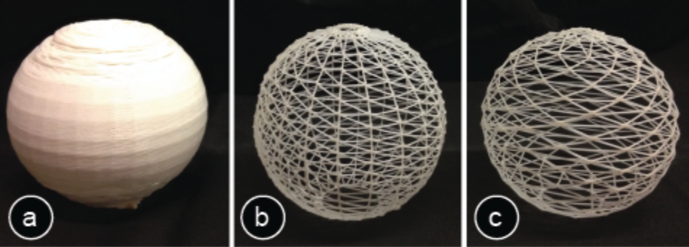
Figure 7: (a) Solid sphere. (b,c) Different ways of printing the sphere as a wireframe.
Extending WirePrint
In this section, we present extensions to our basic approach that allow us to handle additional scenarios.
Additional detail by mixing in layer-wise printing
WirePrint also allows designers to preview detailed parts using layer-wise printing while the rest is printed as a wireframe. For instance, in the case of the bunny head shown in Figure 8, the designer wants to preview the details of the face, such as the eyes and the nose, in the context of the face. This hybrid mix of both techniques allows for quick iteration while ensuring enough detail in those regions where it is required. To mark a region for layer-wise printing, the user simply uses the fill-brush in the WirePrint software and brushes the sections of the zigzag pattern that should be printed in additional detail.
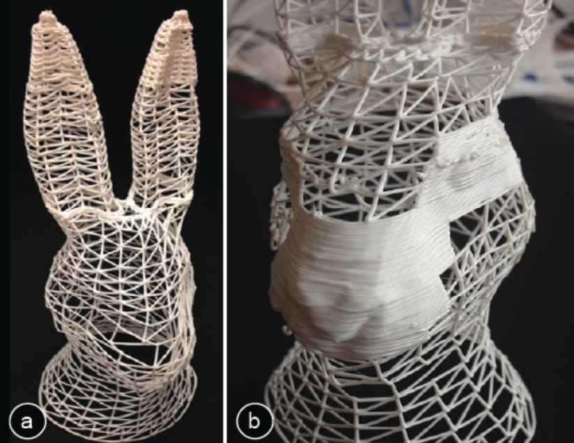
Figure 8: Mixing in layer-wise printing: (a) after checking the shape of the bunny head, the designer decides to (b) print additional detail in the next iteration.
As shown in Figure 9, WirePrint prints hybrid models slice-by-slice. (a) It starts each slice by printing the contour, which is shared between the traditionally printed part and the wireframe printed part. It then prints the wireframe zigzag, while it is still able to place the slanted starting point. It finally prints the layer-wise printing part. (b) Afterwards, WirePrint continues with the procedure on the next slice.
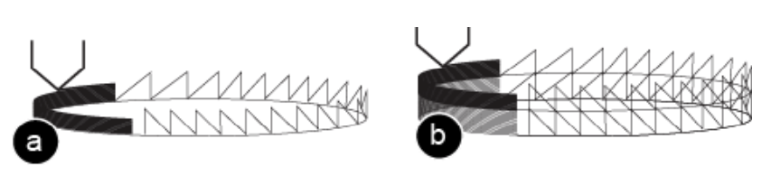
Figure 9: Order of printing edges for hybrid printing when wireframe and traditional printing are mixed.
Objects with filled surfaces
Some 3D models, including the bottle mentioned in the previous section, require closed surfaces. To close the surface, we dip the wireframe print into glue (see Figure 10). An added advantage of this approach is that it strengthens the model.
Figure 2: Low-fi fabrication: all intermediate versions are fabricated as fast low-fidelity prints. Only the final version is fabricated as hi-fidelity.
WirePrint
Figure 1a shows the 3D wireframe of a bottle in the process of being printed using WirePrint. WirePrint takes 14 minutes to 3D print the bottle (on our Kossel mini 3D printer [3]). This is 8.5 times faster than a traditional full-detail 3D print on the same 3D printer.
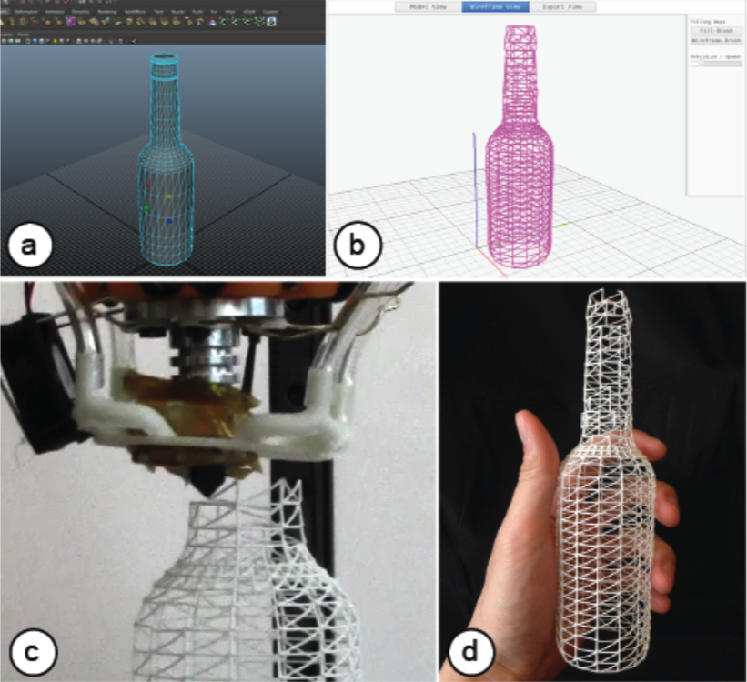
Figure 3: Iterating a design using WirePrint: (a) adjusting the model in a 3D editor, (b) converting it in the WirePrint software, (c) reprinting, (d) testing.
3D wireframes created with WirePrint allow designers to quickly validate the high-level design of a 3D object, such as its ergonomic fit. After examining the bottle shown in Figure 1b, the designer notices that the bottle does not yet rest comfortably in the hand—the designer thus decides to change the model. Figure 3 illustrates the typical workflow when iterating over a design using WirePrint. (a) The designer adjusts the thickness of the bottle in a 3D modeling program, (b) converts the model in the WirePrint software, (c) reprints it, and (d) tests its fit in the hand again. The designer may repeat the process until the bottle fits well. At this point, the designer moves on to the details of the design, until finally 3D printing the bottle (1:59 hours). WirePrint allows this design process, including its iterations, to be completed within only a couple of hours.
How WirePrint works
WirePrint converts a 3D object into a wireframe representation by (1) slicing the 3D model along its vertical axis into horizontal slices and (2) extracting the contours. It then (3) fills the space between slices with a zigzag pattern.
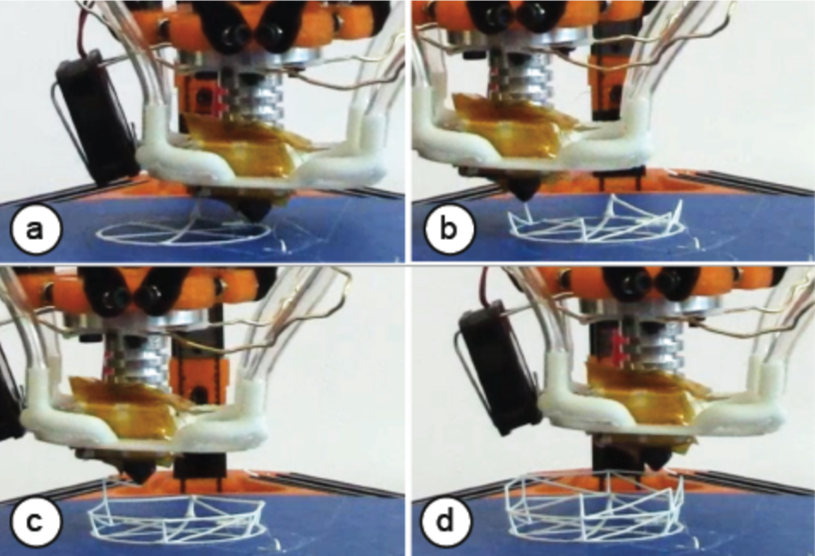
Figure 4: WirePrint’s layouts consist of an alternation between (a) contour and (b) zigzag.
As illustrated by Figure 4, WirePrint fabricates objects by alternating between (a) printing a contour and (b) creating one layer of the zigzag pattern on top of the contour. Unlike traditional 3D printers that stack filament on filament, WirePrint creates its layers by moving the print head up and down repeatedly.
If a slice contains multiple disconnected contours, such as the telephone receiver shown in Figure 5, WirePrint prints all contours located on the same slice first (i.e. the contour of the left ear cap, then the contour of the right ear cap), before moving up to the next slice.
Figure 6 illustrates why WirePrint uses this particular contour-plus-zigzag approach. The main challenge in printing wireframes is that the print head has to respect already printed material in order to prevent collisions. Each bit of printed material results in additional volume becoming inaccessible
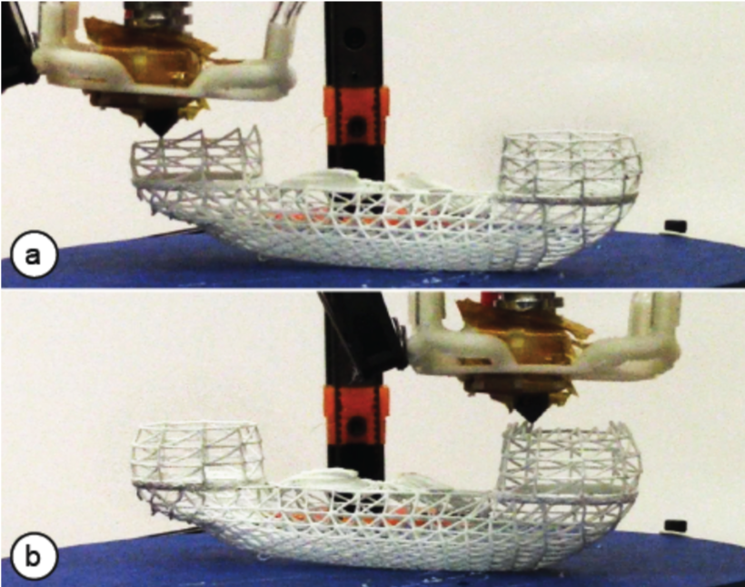
Figure 5: Multiple contours are printed one at a time.
Figure 6 describes the consequences that result from volume becoming inaccessible: (a)Two vertical edges, for example, need to be spaced at least one print head diameter apart. (b) While it is always possible to print upwards, we cannot print downwards steeper than the slant of the print head itself, as steeper edges can cause the slanted tip of the print head to collide with what is just being printed. In the case of our 3D printer (a Kossel Mini [3]), for example, this threshold angle is 32 degrees.
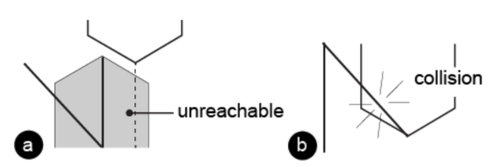
Figure 6: To prevent collisions, (a) the print head can neither print next to already printed material, (b) nor descend more steeply than the threshold angle.
These constraints still allow for several different approaches to convert a 3D model into a printable wireframe. Figure 7c shows another approach that leaves out the contour and uses a different pattern. While this approach respects the constraints stated above, it leads to less sturdier results.
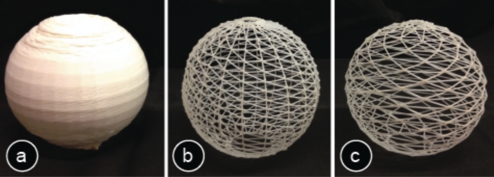
Figure 7: (a) Solid sphere. (b,c) Different ways of printing the sphere as a wireframe.
Extending WirePrint
In this section, we present extensions to our basic approach that allow us to handle additional scenarios.
Additional detail by mixing in layer-wise printing
WirePrint also allows designers to preview detailed parts using layer-wise printing while the rest is printed as a wireframe. For instance, in the case of the bunny head shown in Figure 8, the designer wants to preview the details of the face, such as the eyes and the nose, in the context of the face. This hybrid mix of both techniques allows for quick iteration while ensuring enough detail in those regions where it is required. To mark a region for layer-wise printing, the user simply uses the fill-brush in the WirePrint software and brushes the sections of the zigzag pattern that should be printed in additional detail.
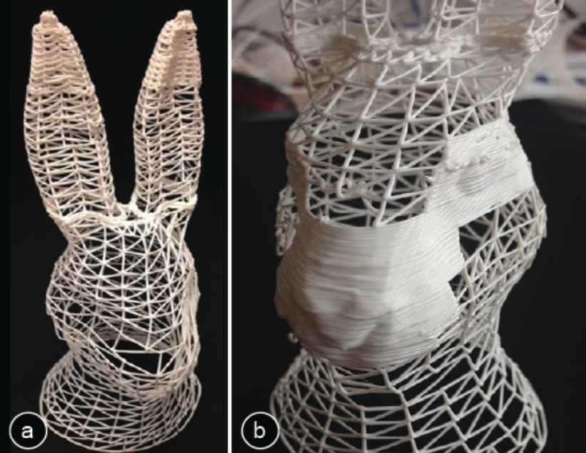
Figure 8: Mixing in layer-wise printing: (a) after checking the shape of the bunny head, the designer decides to (b) print additional detail in the next iteration.
As shown in Figure 9, WirePrint prints hybrid models slice-by-slice. (a) It starts each slice by printing the contour, which is shared between the traditionally printed part and the wireframe printed part. It then prints the wireframe zigzag, while it is still able to place the slanted starting point. It finally prints the layer-wise printing part. (b) Afterwards, WirePrint continues with the procedure on the next slice.
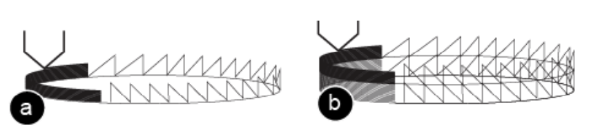
Figure 9: Order of printing edges for hybrid printing when wireframe and traditional printing are mixed.
Objects with filled surfaces
Some 3D models, including the bottle mentioned in the previous section, require closed surfaces. To close the surface, we dip the wireframe print into glue (see Figure 10). An added advantage of this approach is that it strengthens the model.
 Figure 10: Filling surfaces, here the walls of the bottle, by dipping the wireframe into glue (e.g. Mod Podge).
Contribution, Benefits, and Limitations
In this paper, we make three contributions. (1) We propose 3D printing wireframe representations of 3D models as an approach to faster iteration in the early stages of 3D design. (2) To maximize the speed-up, we print edges directly into 3D space, i.e., we instruct 3D printers to extrude filament not layer-by-layer, but along actual strokes in 3D-space. This approach allows us to achieve speed-ups of up to a factor of 10 compared to traditional layer-wise 3D printing (factors range from 2.5-10 depending on the model geometry).
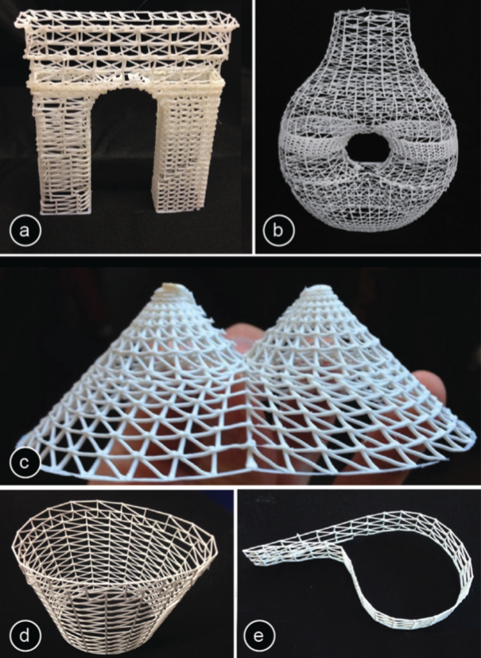
Figure 11: A selection of objects we have 3D printed using WirePrint.
Given that only a fraction of material is extruded, our approach is also substantially cheaper, making it even more affordable for designers to iterate. (3) To make our approach applicable to a wide range of users, we demonstrate how to create wireframe previews with existing FDM 3D printers—users only need to install the WirePrint software.
On the flipside, our approach is less suitable for the later stages of design, i.e., stages where users want to test the actual physical strength of their design, when details and textures matter, or if objects have to perform mechanical functions (e.g., a screw).
In addition, WirePrint is limited to model geometries that take the print head constraints into account (see section How WirePrint works).
WirePrint is especially designed to speed up fused deposition modeling (FDM) 3D printing (e.g. PrintrBot, Kossel mini, MakerBot). It does not speed up 3D printers that print layers as raster images (e.g. Polyjet, ZCorp) and only small speed ups might be achieved on selective laser sintering or stereo lithography approaches.
The Mechanical Aspects Behind WirePrint
The main objective of the mechanical design behind WirePrint is to maximize the stability of the produced objects while minimizing printing time.
Delta Printer
All of the wireframe models shown in this paper were printed on Kossel mini 3D printer (Figure 12), i.e., a small volume printer that actuates the print head using six vertically actuated arms (a so-called delta design).
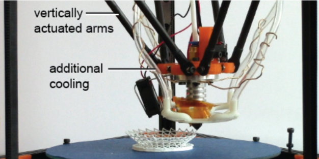
Figure 12: We use a Kossel mini delta printer. For additional speed we improved the fan cooling system.
WirePrint is particularly fast on the delta design, because delta printers allow the print head to move up and down quickly. 3D printers following the more traditional Cartesian design tend to be slower along the vertical axis since layer-wise printing does not require high speeds in this direction. However, since the axis speed in the z-direction is simply a design decision of the manufacturers, WirePrint can be made equally fast on Cartesian printers with the proper hardware design, i.e. by changing both the movement/turn ratio and the stepper motor speed in the z- direction.
Optimizing the filament for fast wireframe printing
Since WirePrint requires frequent transitions between compliant and solid, we found materials that have a quick transition time to work best. From the two currently most common 3D printing materials PLA and ABS, the latter one works best. The reason is that ABS has a smaller temperature range, in which it changes its viscosity from compliant to solid (230–250° C) than PLA (180–250° C).
Extrusion thickness
A larger opening in the extrusion nozzle leads to thicker and thus sturdier edges and thus to sturdier objects. On the flipside, thicker edges require more time to cool down, which slows down the printing process. For our purposes, we found a 0.7mm extrusion nozzle to lead to the best results, i.e. sturdy and fast to print.
Cooling
We attached two air jets that are controlled by a solenoid valve to our print head (Figure 12). WirePrint controls the airflow by opening and closing the valve using g-code (command M42). The additional cooling causes the filament to solidify faster after extrusion, which allows WirePrint to move on even faster. In cases where WirePrint needs the filament to stick to another part of the model, it turns the cooling off. In cases where no additional cooling can be added to the 3D printer, WirePrint can either make use of the weaker built-in fan or can add an additional pause to wait for material to solidify.
Support structures
One interesting aspect of our technique is that WirePrint requires less support material than regular layer-wise 3D printing because it can print overhangs of up to 90°. An example of a small 90° overhang can be seen in Figure 1c at the bottom part of the model (the maximum length we tested was 6.5cm length). WirePrint can print these overhangs because the string of extruded material is put under tension until it is completely sturdy.
Yet other geometry, such as a human figure extending the arms downwards, can only be printed with support. As in the layer-wise FDM approach, the need of support will reduce the overall print speed. However, one can think of using WirePrint to print support structures—again saving time compared to the currently existing approach.
Implementation
To help readers replicate our results, we use the following two sections to explain the details of our software imple- mentation, as well as the mechanical aspects behind our approach.
The WirePrint system
Our system WirePrint loads 3D models in STL format and generates custom g-code (i.e., the instruction language used by 3D printers). The user can then export the g-code and load it into the standard 3D printing software for printing (we use Repetier Host [16]). The custom g-code moves the print head along the desired path and controls how much material is extruded at which points. WirePrint is written in CoffeeScript and uses the construc- tive solid geometry library for its geometry operations.
#1 Slicing the model
After loading the 3D model, WirePrint slices the model into a set of slices. The locations of the slices is determined by (1)important features on the model geometry, and (2) the minimum and maximum height of the zigzag between two subsequent slices (we use a 0.7mm extrusion nozzle, which leads to 1.4mm minimal height, and our print head is 6mm high which leads to 6mm maximum height). To generate a slice, WirePrint cuts the 3D model against a horizontal slice (width and length of the object’s bounding box) at a specific height using a Boolean intersect operation.
#2 Extracting the contour of a slice
From each slice, WirePrint extracts the top contour by converting it to a high-resolution bitmap and then applying OpenCV’s findContour algorithm. If there are multiple contours on one slice, OpenCV’s findContour algorithm also returns their relationship to each other, i.e. whether they are located next to each other or contained in each other. We use this information to determine the printing order.
#3 Generating the zigzag pattern
When generating the zigzag pattern, WirePrint maximizes the object’s physical stability by aligning all vertical lines across slices. Simply using the points from the slice below does not work, because subsequent slices might: (1) have a different contour length, which can lead to insufficient space between two subsequent points (print head collision), and (2) slices might have different heights, which can lead to invalid printing angles. We therefore use a mixed approach: First we calculate the optimal even spacing of points for each contour. Then we calculate the minimum distance from a point on the bottom slice to the top slice. We then use the average of both, which leads to good stability and a comparably homogeneous spacing. In the case that two vertical lines are still too close to each other, we ignore one of them.
#4 Compensating for mechanical aspects
After generating the wireframe according to the model geometry, WirePrint applies all geometrical modifications that are required due to the mechanical properties of filament and print head e.g. removing the last diagonal edge of the zigzag from the list of edges to avoid print head collision.
#5 Exporting g-code
In the last step, WirePrint converts the geometry information into g-code. For this, it traverses the list of edges (all contours and zigzag patterns) to export them in the right order for printing. It uses the start and end point coordinates of each edge to generate the movement commands for the print head and the length of the edge to determine how much extrusion is required (e.g. G1 X10 Y 10 Z10 E5 means: move to those coordinates and extrude 5 units of filament on the way). Our g-code exporter also generates the commands for turning the fan on and off to properly cool the wireframe edges. The g-code exporter writes these g-code commands into a .gcode file that the user can then execute on the 3D printer.
#6 Detecting geometry splits in the geometry
In cases where a slice has a single contour and its subsequent slice has two (and vice versa), we print them on top of each other without the intermediate zigzag pattern. We use this particular approach to ensure that the zigzag of each new slice has filament printed underneath it.
#7 Combining with layer-wise printing
For mixing in layer-wise 3D printing, WirePrint generates additional slices between two subsequent wireframe slices. The number of additional slices depends on the printing resolution (e.g. if two wireframe slices are 3.5mm apart and the extrusion nozzle is 0.7mm, WirePrint will generate 3.5mm/0.7mm = 5 additional layers).
After generating the slices and extracting their contours, WirePrint analyzes which part has been selected for layer-wise printing. It then cuts the contours at the start and end point of the selected part. The remaining part is filled with the zigzag pattern.
Experimentation to Optimize Printing Speed
To create accurate and sturdy wireframes, WirePrint needs to take into account the edge deformation that appears when filament is not yet solidified (see Figure 13).
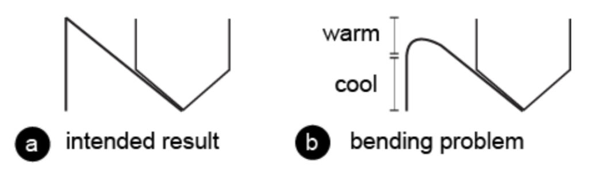
Figure 13: Deformation problem when edges are not yet solidified.
We identified three potential approaches to improve the quality of a WirePrint:
1. WirePrint reduces the overall speed with which the print head moves, allowing the filament to solidify as it’s being printed;
2. WirePrint moves the print head quickly, but pauses at the end of each vertical edge to let the edge solidify;
3.WirePrint prints full speed, but anticipates the deformation by extending the vertical movement of the print head (see Figure 14).
Through experimentation, we discovered that the fastest way to print is to add a delay at the end of each floating edge. Although a pause at the end of each vertical edge initially seemed unattractive, it lead to the most accurate results because the edges solidify under tension. Anticipating the deformation during printing was attractive at first, but the extra traveling time of the print head quickly undermined the benefit of a faster printing speed, and in general the results where less appealing.
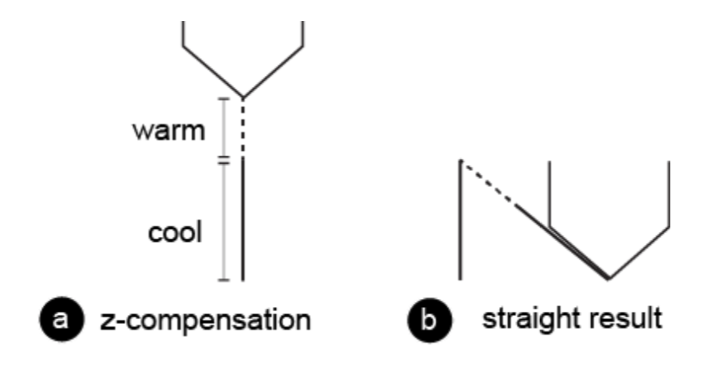
Figure 14: Approach #3: compensating for material transition time.
To better understand the interactions between speed and delay, we performed a series of test prints with a sphere (radius=3.9cm), which are shown in Figure 15. During our tests, we found that the best solution is to move with the maximum extrusion speed of the printer (30mm/s) combined with a 1s pause at the end of each vertical line.
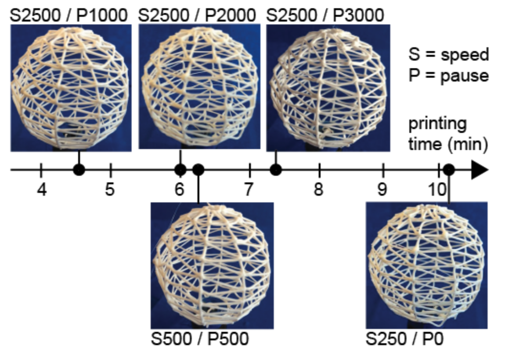
Figure 15: Print head speed/pause trade-off.
Validation
The main strength of WirePrint is that it produces a substantial speed-up of up to a factor of 10. To validate that this speed-up results from extruding filament into 3D space, we also implemented wireframe printing based on traditional layer-wise 3D printing as a control condition.
We implemented layer-wise wireframe printing as follows: (1) print only the edges of a model, and (2) minimize the use of support material, as this adds to the printing volume (support material is required for all overhangs larger than 45 degree). We wrote a piece of software that converts a 3D model into a wireframe mesh and that adds additional 45 degree edges as support structures where needed. For instance, a cube processed with our software has support edges for the horizontal edges at the top (see Figure 16b).
We compared the three conditions using the simple example of a 28mm cube. Figure 16 shows the printing times for (a) traditional layer-wise 3D printing (solid with 10% infill), (b) traditional layer-wise 3D printing (wireframe, edges have 10% infill), and (c) WirePrint.
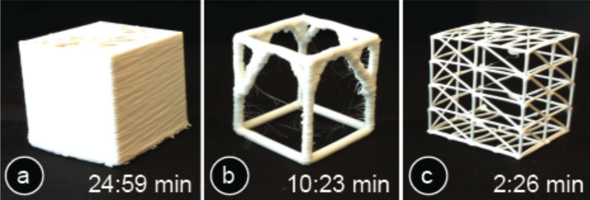
Figure 16: Printing times: (a) layer-wise 3D printing with 10% infill, (b) layer-wise 3D printing of a wireframe (reduced volume, 10% infill), (c) WirePrint.
Although printing a wireframe layer-wise substantially reduces the volume, there is only modest improvement in printing time (factor 2x, 24:59 minutes for layer-wise solid printing vs. 10:23 minutes for layer-wise wireframe printing). The layer-wise printed wireframe was also substantially slower than the model generated by WirePrint (10:23 minutes for layer-wise printing vs. 2:26 minutes for WirePrint).
Surprisingly, the layer-wise printed wireframe model only provided a 2x speed up compared to the regular printed model with faces and more infill material. We found that the main reason for this is that the path for the print head remains almost the same. Figure 17 illustrates this: Since the material is printed layer-wise, the print head still has to traverse the entire cube outline as it moves from corner to corner, bottom-up.
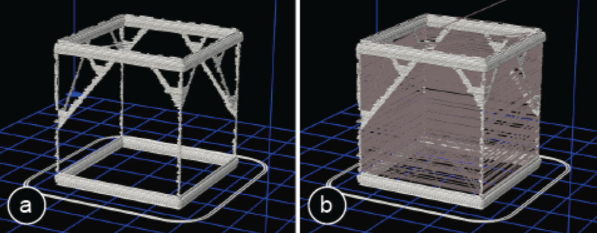
Figure 17: The print path simulation (gray lines) shows that for layer-wise printing, the print head has to move along the entire cube outline.
Our quick validation shows that the performance benefits of WirePrint indeed result from implementing the ability to extrude strokes in 3D space, rather than printing them layer-wise.
Conclusion
In this paper, we proposed a novel approach to 3D prototyping, i.e. to print wireframe representations instead of a filled model and to extrude filament directly into 3D space instead of printing layer-wise. Our validation shows that in combination, these two approaches indeed lead to a substantial speed up of up to a factor of 10 and thus allow designers to iterate more often. For future work, we plan to explore how fast 3D printing allows for novel types of interfaces that close the feedback loop between digital editing and physical fabrication.
Figure 10: Filling surfaces, here the walls of the bottle, by dipping the wireframe into glue (e.g. Mod Podge).
Contribution, Benefits, and Limitations
In this paper, we make three contributions. (1) We propose 3D printing wireframe representations of 3D models as an approach to faster iteration in the early stages of 3D design. (2) To maximize the speed-up, we print edges directly into 3D space, i.e., we instruct 3D printers to extrude filament not layer-by-layer, but along actual strokes in 3D-space. This approach allows us to achieve speed-ups of up to a factor of 10 compared to traditional layer-wise 3D printing (factors range from 2.5-10 depending on the model geometry).
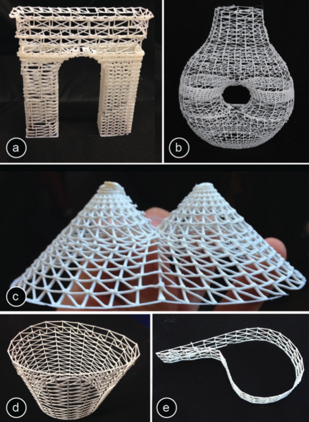
Figure 11: A selection of objects we have 3D printed using WirePrint.
Given that only a fraction of material is extruded, our approach is also substantially cheaper, making it even more affordable for designers to iterate. (3) To make our approach applicable to a wide range of users, we demonstrate how to create wireframe previews with existing FDM 3D printers—users only need to install the WirePrint software.
On the flipside, our approach is less suitable for the later stages of design, i.e., stages where users want to test the actual physical strength of their design, when details and textures matter, or if objects have to perform mechanical functions (e.g., a screw).
In addition, WirePrint is limited to model geometries that take the print head constraints into account (see section How WirePrint works).
WirePrint is especially designed to speed up fused deposition modeling (FDM) 3D printing (e.g. PrintrBot, Kossel mini, MakerBot). It does not speed up 3D printers that print layers as raster images (e.g. Polyjet, ZCorp) and only small speed ups might be achieved on selective laser sintering or stereo lithography approaches.
The Mechanical Aspects Behind WirePrint
The main objective of the mechanical design behind WirePrint is to maximize the stability of the produced objects while minimizing printing time.
Delta Printer
All of the wireframe models shown in this paper were printed on Kossel mini 3D printer (Figure 12), i.e., a small volume printer that actuates the print head using six vertically actuated arms (a so-called delta design).
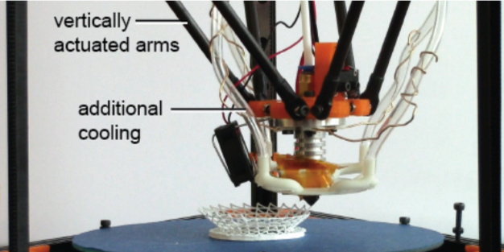
Figure 12: We use a Kossel mini delta printer. For additional speed we improved the fan cooling system.
WirePrint is particularly fast on the delta design, because delta printers allow the print head to move up and down quickly. 3D printers following the more traditional Cartesian design tend to be slower along the vertical axis since layer-wise printing does not require high speeds in this direction. However, since the axis speed in the z-direction is simply a design decision of the manufacturers, WirePrint can be made equally fast on Cartesian printers with the proper hardware design, i.e. by changing both the movement/turn ratio and the stepper motor speed in the z- direction.
Optimizing the filament for fast wireframe printing
Since WirePrint requires frequent transitions between compliant and solid, we found materials that have a quick transition time to work best. From the two currently most common 3D printing materials PLA and ABS, the latter one works best. The reason is that ABS has a smaller temperature range, in which it changes its viscosity from compliant to solid (230–250° C) than PLA (180–250° C).
Extrusion thickness
A larger opening in the extrusion nozzle leads to thicker and thus sturdier edges and thus to sturdier objects. On the flipside, thicker edges require more time to cool down, which slows down the printing process. For our purposes, we found a 0.7mm extrusion nozzle to lead to the best results, i.e. sturdy and fast to print.
Cooling
We attached two air jets that are controlled by a solenoid valve to our print head (Figure 12). WirePrint controls the airflow by opening and closing the valve using g-code (command M42). The additional cooling causes the filament to solidify faster after extrusion, which allows WirePrint to move on even faster. In cases where WirePrint needs the filament to stick to another part of the model, it turns the cooling off. In cases where no additional cooling can be added to the 3D printer, WirePrint can either make use of the weaker built-in fan or can add an additional pause to wait for material to solidify.
Support structures
One interesting aspect of our technique is that WirePrint requires less support material than regular layer-wise 3D printing because it can print overhangs of up to 90°. An example of a small 90° overhang can be seen in Figure 1c at the bottom part of the model (the maximum length we tested was 6.5cm length). WirePrint can print these overhangs because the string of extruded material is put under tension until it is completely sturdy.
Yet other geometry, such as a human figure extending the arms downwards, can only be printed with support. As in the layer-wise FDM approach, the need of support will reduce the overall print speed. However, one can think of using WirePrint to print support structures—again saving time compared to the currently existing approach.
Implementation
To help readers replicate our results, we use the following two sections to explain the details of our software imple- mentation, as well as the mechanical aspects behind our approach.
The WirePrint system
Our system WirePrint loads 3D models in STL format and generates custom g-code (i.e., the instruction language used by 3D printers). The user can then export the g-code and load it into the standard 3D printing software for printing (we use Repetier Host [16]). The custom g-code moves the print head along the desired path and controls how much material is extruded at which points. WirePrint is written in CoffeeScript and uses the construc- tive solid geometry library for its geometry operations.
#1 Slicing the model
After loading the 3D model, WirePrint slices the model into a set of slices. The locations of the slices is determined by (1)important features on the model geometry, and (2) the minimum and maximum height of the zigzag between two subsequent slices (we use a 0.7mm extrusion nozzle, which leads to 1.4mm minimal height, and our print head is 6mm high which leads to 6mm maximum height). To generate a slice, WirePrint cuts the 3D model against a horizontal slice (width and length of the object’s bounding box) at a specific height using a Boolean intersect operation.
#2 Extracting the contour of a slice
From each slice, WirePrint extracts the top contour by converting it to a high-resolution bitmap and then applying OpenCV’s findContour algorithm. If there are multiple contours on one slice, OpenCV’s findContour algorithm also returns their relationship to each other, i.e. whether they are located next to each other or contained in each other. We use this information to determine the printing order.
#3 Generating the zigzag pattern
When generating the zigzag pattern, WirePrint maximizes the object’s physical stability by aligning all vertical lines across slices. Simply using the points from the slice below does not work, because subsequent slices might: (1) have a different contour length, which can lead to insufficient space between two subsequent points (print head collision), and (2) slices might have different heights, which can lead to invalid printing angles. We therefore use a mixed approach: First we calculate the optimal even spacing of points for each contour. Then we calculate the minimum distance from a point on the bottom slice to the top slice. We then use the average of both, which leads to good stability and a comparably homogeneous spacing. In the case that two vertical lines are still too close to each other, we ignore one of them.
#4 Compensating for mechanical aspects
After generating the wireframe according to the model geometry, WirePrint applies all geometrical modifications that are required due to the mechanical properties of filament and print head e.g. removing the last diagonal edge of the zigzag from the list of edges to avoid print head collision.
#5 Exporting g-code
In the last step, WirePrint converts the geometry information into g-code. For this, it traverses the list of edges (all contours and zigzag patterns) to export them in the right order for printing. It uses the start and end point coordinates of each edge to generate the movement commands for the print head and the length of the edge to determine how much extrusion is required (e.g. G1 X10 Y 10 Z10 E5 means: move to those coordinates and extrude 5 units of filament on the way). Our g-code exporter also generates the commands for turning the fan on and off to properly cool the wireframe edges. The g-code exporter writes these g-code commands into a .gcode file that the user can then execute on the 3D printer.
#6 Detecting geometry splits in the geometry
In cases where a slice has a single contour and its subsequent slice has two (and vice versa), we print them on top of each other without the intermediate zigzag pattern. We use this particular approach to ensure that the zigzag of each new slice has filament printed underneath it.
#7 Combining with layer-wise printing
For mixing in layer-wise 3D printing, WirePrint generates additional slices between two subsequent wireframe slices. The number of additional slices depends on the printing resolution (e.g. if two wireframe slices are 3.5mm apart and the extrusion nozzle is 0.7mm, WirePrint will generate 3.5mm/0.7mm = 5 additional layers).
After generating the slices and extracting their contours, WirePrint analyzes which part has been selected for layer-wise printing. It then cuts the contours at the start and end point of the selected part. The remaining part is filled with the zigzag pattern.
Experimentation to Optimize Printing Speed
To create accurate and sturdy wireframes, WirePrint needs to take into account the edge deformation that appears when filament is not yet solidified (see Figure 13).
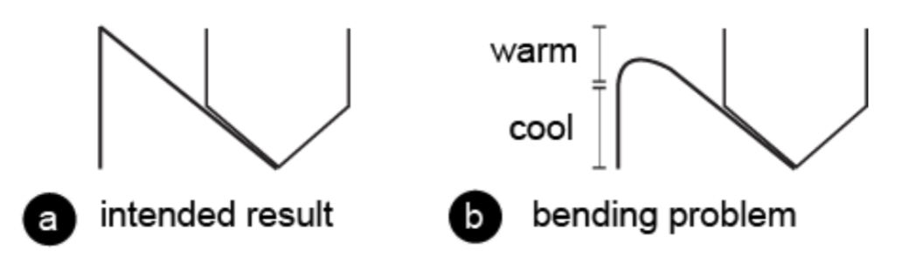
Figure 13: Deformation problem when edges are not yet solidified.
We identified three potential approaches to improve the quality of a WirePrint:
1. WirePrint reduces the overall speed with which the print head moves, allowing the filament to solidify as it’s being printed;
2. WirePrint moves the print head quickly, but pauses at the end of each vertical edge to let the edge solidify;
3.WirePrint prints full speed, but anticipates the deformation by extending the vertical movement of the print head (see Figure 14).
Through experimentation, we discovered that the fastest way to print is to add a delay at the end of each floating edge. Although a pause at the end of each vertical edge initially seemed unattractive, it lead to the most accurate results because the edges solidify under tension. Anticipating the deformation during printing was attractive at first, but the extra traveling time of the print head quickly undermined the benefit of a faster printing speed, and in general the results where less appealing.
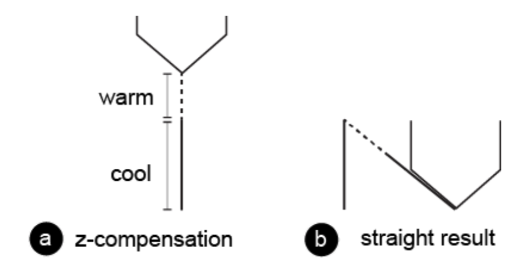
Figure 14: Approach #3: compensating for material transition time.
To better understand the interactions between speed and delay, we performed a series of test prints with a sphere (radius=3.9cm), which are shown in Figure 15. During our tests, we found that the best solution is to move with the maximum extrusion speed of the printer (30mm/s) combined with a 1s pause at the end of each vertical line.
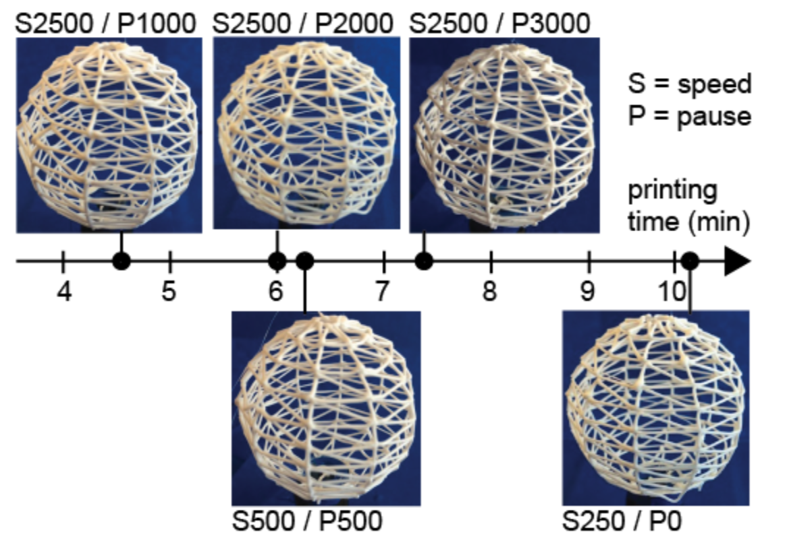
Figure 15: Print head speed/pause trade-off.
Validation
The main strength of WirePrint is that it produces a substantial speed-up of up to a factor of 10. To validate that this speed-up results from extruding filament into 3D space, we also implemented wireframe printing based on traditional layer-wise 3D printing as a control condition.
We implemented layer-wise wireframe printing as follows: (1) print only the edges of a model, and (2) minimize the use of support material, as this adds to the printing volume (support material is required for all overhangs larger than 45 degree). We wrote a piece of software that converts a 3D model into a wireframe mesh and that adds additional 45 degree edges as support structures where needed. For instance, a cube processed with our software has support edges for the horizontal edges at the top (see Figure 16b).
We compared the three conditions using the simple example of a 28mm cube. Figure 16 shows the printing times for (a) traditional layer-wise 3D printing (solid with 10% infill), (b) traditional layer-wise 3D printing (wireframe, edges have 10% infill), and (c) WirePrint.
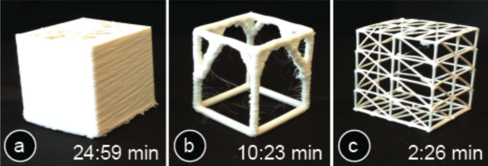
Figure 16: Printing times: (a) layer-wise 3D printing with 10% infill, (b) layer-wise 3D printing of a wireframe (reduced volume, 10% infill), (c) WirePrint.
Although printing a wireframe layer-wise substantially reduces the volume, there is only modest improvement in printing time (factor 2x, 24:59 minutes for layer-wise solid printing vs. 10:23 minutes for layer-wise wireframe printing). The layer-wise printed wireframe was also substantially slower than the model generated by WirePrint (10:23 minutes for layer-wise printing vs. 2:26 minutes for WirePrint).
Surprisingly, the layer-wise printed wireframe model only provided a 2x speed up compared to the regular printed model with faces and more infill material. We found that the main reason for this is that the path for the print head remains almost the same. Figure 17 illustrates this: Since the material is printed layer-wise, the print head still has to traverse the entire cube outline as it moves from corner to corner, bottom-up.
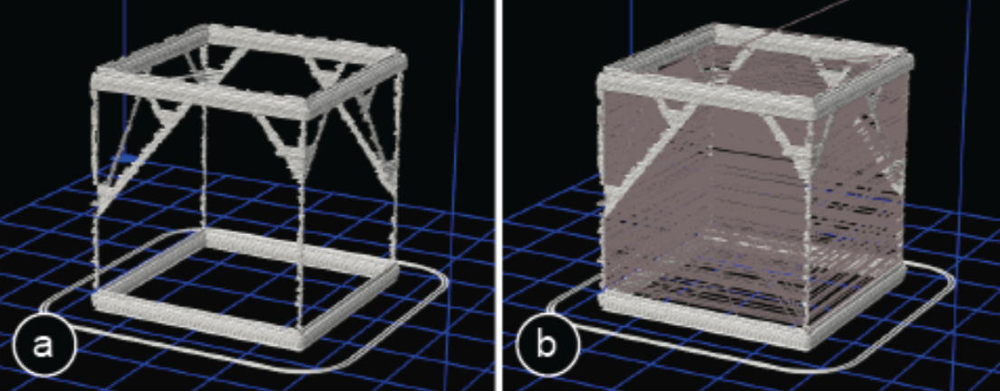
Figure 17: The print path simulation (gray lines) shows that for layer-wise printing, the print head has to move along the entire cube outline.
Our quick validation shows that the performance benefits of WirePrint indeed result from implementing the ability to extrude strokes in 3D space, rather than printing them layer-wise.
Conclusion
In this paper, we proposed a novel approach to 3D prototyping, i.e. to print wireframe representations instead of a filled model and to extrude filament directly into 3D space instead of printing layer-wise. Our validation shows that in combination, these two approaches indeed lead to a substantial speed up of up to a factor of 10 and thus allow designers to iterate more often. For future work, we plan to explore how fast 3D printing allows for novel types of interfaces that close the feedback loop between digital editing and physical fabrication.